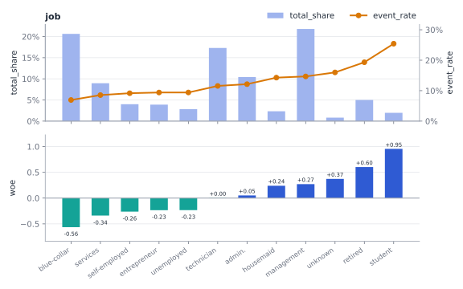

Weight of evidence and information value#
woe_table() measures how each group separates a binary target. An event is target 1 and a non-event is target 0. Both target classes must be present. Group and target series must share the same index; arrays and lists are matched by position, as Conventions describes for every function.
WOE and IV follow Binning, which forms the groups, and come before variable selection, which fits a logistic regression on the WOE-encoded variables. woe_transform() encodes new data with the fitted WOE, woe() and iv() compute the measures from counts that are already aggregated, and woe_trend() names the shape of the WOE over the bins of a numeric variable.
Definitions#
For group \(i\), let \(E_i\) and \(N_i\) be its numbers of events and non-events. Its shares of all events and of all non-events are
The weight of evidence and the information value contribution of the group are
A positive WOE means that the group is relatively more common among events. Each IV contribution is zero or positive, because \(p_i - q_i\) and \(\ln(p_i / q_i)\) always share a sign.
A worked example#
Two thirds of group a are events and two thirds of group b are non-events, so the two groups have opposite WOE values of \(\pm\ln 2\).
>>> import pandas as pd
>>> from kivi.woe import woe_table
>>> groups = pd.Series(["a", "a", "a", "b", "b", "b"])
>>> target = pd.Series([1, 1, 0, 1, 0, 0])
>>> result = woe_table(groups, target)
The first columns describe each group on its own: its counts, its share of all observations and its event rate.
>>> result[["non_event", "event", "total", "total_share", "event_rate"]].round(4)
non_event event total total_share event_rate
bin
a 1 2 3 0.5 0.6667
b 2 1 3 0.5 0.3333
The remaining columns compare the two classes:
>>> result[["non_event_share", "event_share", "woe", "iv"]].round(4)
non_event_share event_share woe iv
bin
a 0.3333 0.6667 0.6931 0.231
b 0.6667 0.3333 -0.6931 0.231
>>> print(f"{result['iv'].sum():.4f}")
0.4621

How woe_table computes the example: it counts the non-events and events of each group, divides each count by its column total, takes the log of the ratio of the two shares as the WOE, and multiplies the WOE by the difference of the shares for the IV.#
When the counts are already aggregated, for example from a database query, woe() and iv() take the event and non-event counts of each group and give the same values:
>>> from kivi.woe import iv, woe
>>> woe([2, 1], [1, 2]).round(4)
array([ 0.6931, -0.6931])
>>> round(iv([2, 1], [1, 2]), 4)
0.4621
Smoothing empty cells#
A group without events or without non-events would have an infinite WOE. Before the shares are computed, each zero count is replaced by the smoothing value \(s\):
and likewise for non-events. Smoothing replaces zero cells with 0.5 by default. Each column is then normalized separately. Counts in the result always report observations.
>>> groups = pd.Series(["a", "a", "b", "b", "c"])
>>> target = pd.Series([1, 0, 0, 0, 1])
>>> columns = ["non_event", "event", "non_event_share", "event_share", "woe", "iv"]
>>> woe_table(groups, target)[columns].round(3)
non_event event non_event_share event_share woe iv
bin
a 1 1 0.286 0.4 0.336 0.038
b 2 0 0.571 0.2 -1.050 0.390
c 0 1 0.143 0.4 1.030 0.265
Warning
Changing smoothing can materially change the result for sparse bins. Merge small bins, or compare several smoothing values, before relying on their WOE.
Reading the result#
Column |
Meaning |
|---|---|
|
Observed counts in each group. |
|
\(q_i\) and \(p_i\) after smoothing; each column sums to 1. |
|
The group’s share of all observations, without smoothing. |
|
Events divided by the total of the group, without smoothing. For a default target this is the bad rate. |
|
\(\ln(p_i / q_i)\). |
|
The group’s IV contribution. Sum the column for the variable’s IV. |
Read the per-bin contributions before interpreting a total. A group with few events can have a large WOE despite representing few customers.
Note
A widely used rule of thumb reads an IV below 0.02 as not predictive, 0.02 to 0.1 as weak, 0.1 to 0.3 as medium and above 0.3 as strong. Treat these bands as a starting point, not as a test; a very high IV often points to a leak of the target into the variable.
Charting WOE#
A WOE chart is the usual way to review a variable with the business: the share of customers and the event rate of each group on top, the WOE below. Categorical variables read best when sorted by WOE.
>>> from kivi.datasets import load_bank
>>> data = load_bank()
>>> reference = data.iloc[:3000]
>>> jobs = woe_table(reference["job"], reference["target"]).sort_values("woe")
>>> jobs[["event", "non_event", "event_rate", "woe"]].round(3).iloc[[0, 1, -2, -1]]
event non_event event_rate woe
bin
blue-collar 43 576 0.069 -0.564
services 23 246 0.086 -0.339
retired 29 121 0.193 0.602
student 15 44 0.254 0.955

WOE by job. Students and retired customers subscribe far more often than blue-collar workers, but students are only 2% of the sample, so their WOE rests on few customers.#
Plotting code
The documentation draws its WOE charts with this matplotlib function. It takes a woe_table() result.
def woe_rate_panels(table: pd.DataFrame, title: str = ""):
"""Population share and event rate per bin (top) and WOE per bin (bottom)."""
share, event_rate = table["total_share"], table["event_rate"]
x = np.arange(len(table))
fig, (top, bottom) = plt.subplots(
2, 1, figsize=(8, 5), sharex=True, gridspec_kw={"height_ratios": [1, 1.1]}
)
top.bar(x, share, color=LIGHT_BLUE, width=0.6, label="total_share")
top.yaxis.set_major_formatter(PercentFormatter(1, decimals=0))
top.set_ylabel("total_share")
rate = top.twinx()
rate.plot(x, event_rate, color=AMBER, marker="o", linewidth=2, label="event_rate")
rate.yaxis.set_major_formatter(PercentFormatter(1, decimals=0))
rate.set_ylim(0, max(event_rate.max() * 1.25, 0.01))
rate.set_ylabel("event_rate")
rate.grid(False)
rate.spines["right"].set_visible(True)
handles = top.get_legend_handles_labels()[0] + rate.get_legend_handles_labels()[0]
top.legend(
handles,
["total_share", "event_rate"],
loc="lower right",
bbox_to_anchor=(1, 1.01),
ncols=2,
borderaxespad=0,
)
if title:
top.set_title(title)
colors = [BLUE if value >= 0 else TEAL for value in table["woe"]]
bottom.bar(x, table["woe"], color=colors, width=0.6)
bottom.axhline(0, color=GRAY, linewidth=1)
_bar_values(bottom, x, table["woe"])
bottom.set_ylabel("woe")
_ticks(bottom, x, _labels(table.index))
fig.tight_layout()
return fig
To compare many variables at once, rank them by IV; see Risk modeling workflow.
The trend of the WOE#
The WOE of a numeric variable is easiest to explain when it rises or falls steadily with the variable. woe_trend() names the shape of a binning from the woe column of the rows labeled with intervals, in the order of the table: "increasing", "decreasing", "u_shaped" (falls, then rises), "inverted_u" (rises, then falls), "irregular" (changes direction more than once) or "flat". Five quantile bins give four shapes on the bank data:
>>> from kivi.binning import bin_edges
>>> from kivi.woe import woe_trend
>>> trends = {}
>>> for column in ["age", "balance", "day", "duration"]:
... values = reference[column]
... table = woe_table(pd.cut(values, bin_edges(values, bins=5)), reference["target"])
... trends[column] = woe_trend(table)
>>> trends
{'age': 'u_shaped', 'balance': 'increasing', 'day': 'irregular', 'duration': 'increasing'}
Rows of special codes and of missing values have no place on the scale of the variable, so they are left out. The code -1 of pdays, a customer not contacted before, comes first in its table, and the trend reads the five intervals after it:
>>> from kivi.binning import cut
>>> pdays = reference["pdays"]
>>> edges = bin_edges(pdays, bins=5, special=[-1])
>>> pdays_table = woe_table(cut(pdays, edges, special=[-1]), reference["target"])
>>> pdays_table["woe"].round(3)
bin
-1 -0.257
(-inf, 105.0] 1.880
(105.0, 175.6] 0.326
(175.6, 255.4] 1.161
(255.4, 342.2] -0.336
(342.2, inf] 0.239
Name: woe, dtype: float64
>>> woe_trend(pdays_table)
'irregular'
An irregular trend is often noise in small bins. monotonic_edges() merges neighbouring bins until the WOE rises or falls from bin to bin, as Binning describes:
>>> from kivi.binning import monotonic_edges
>>> edges = monotonic_edges(pdays, reference["target"], special=[-1])
>>> woe_trend(woe_table(cut(pdays, edges, special=[-1]), reference["target"]))
'decreasing'
Neighbouring bins whose WOE values agree to a relative 1e-10 neither rise nor fall, so they break no trend. A U shape can be genuine, as for age, where the youngest and the oldest customers subscribe more often; review it with the business rather than force it to be monotonic. The trend follows the order of the table, so read it before sorting the rows, for example by WOE for a chart. A categorical variable has no intervals and no order, so woe_trend() raises a ValueError for its table.
Encoding new data#
A scorecard model takes WOE values as inputs. woe_transform() replaces each group with its WOE from a development table, so the validation sample and later production data are encoded with exactly the same values. Group every sample with the edges fitted on the development sample:
>>> from kivi.binning import bin_edges
>>> from kivi.woe import woe_transform
>>> edges = bin_edges(reference["age"], bins=5)
>>> age_table = woe_table(pd.cut(reference["age"], edges), reference["target"])
>>> current = data.iloc[3000:]
>>> encoded = woe_transform(pd.cut(current["age"], edges), age_table)
>>> pd.DataFrame({"age": current["age"], "woe": encoded}).head(4).round(3)
age woe
3000 45 -0.050
3001 43 -0.050
3002 27 0.114
3003 33 -0.125

woe_transform looks up the group of each row in the development table and returns its WOE, with the index of the rows.#
The result keeps the index of the groups. A missing value takes the WOE of the missing group when the development sample had missing values.
A group that is not in the table, such as a category that appears only in later data, raises an error by default, so a mapping problem cannot go unnoticed:
>>> new_jobs = pd.Series(["student", "gig worker", None])
>>> woe_transform(new_jobs, jobs)
Traceback (most recent call last):
...
ValueError: 2 group(s) are not in table, such as 'gig worker', nan; pass unseen to give them a WOE
Pass unseen to give such groups a WOE instead. A WOE of 0 is the neutral choice: it stands for the event rate of the whole development sample.
>>> woe_transform(new_jobs, jobs, unseen=0.0).round(3).tolist()
[0.955, 0.0, 0.0]
Information value after supervised binning#
The information value on the sample that the bins were fitted on overstates the information value that the variable will show elsewhere. Even with bins fixed in advance, a variable unrelated to the target has a positive IV. With \(n_e\) events and \(n_n\) non-events among \(n\) observations in \(k\) bins,
so the IV of such a variable averages \((k - 1)\,n / (n_e n_n)\). With 348 subscribers among the 3,000 reference customers, that is 0.013 for 5 bins and 0.062 for 20:
>>> events, rows = int(reference["target"].sum()), len(reference)
>>> [round((bins - 1) * rows / (events * (rows - events)), 3) for bins in (5, 20)]
[0.013, 0.062]
The approximation holds for bins fixed without the target, such as the quantile bins of profile_table(), whose chi2_p_value tests the IV in this way. The supervised methods of Binning choose the edges to separate the classes of the sample, so the IV of noise is larger still. Shuffling the target breaks every link between a variable and the target. Five bins of tree_edges(), fitted again on each of 100 shuffles of the target, still give day an IV of 0.037 on average, nearly three times the 0.013 of five fixed bins, and above the usual threshold of 0.02 in most shuffles:
>>> import numpy as np
>>> from kivi.binning import tree_edges
>>> def tree_iv(values, target):
... groups = pd.cut(values, tree_edges(values, target))
... return woe_table(groups, target)["iv"].sum()
>>> target = reference["target"]
>>> rng = np.random.default_rng(0)
>>> shuffled = np.array([
... tree_iv(reference["day"], pd.Series(rng.permutation(target.to_numpy()), index=target.index))
... for _ in range(100)
... ])
>>> print(f"mean {shuffled.mean():.3f}, 95% quantile {np.quantile(shuffled, 0.95):.3f}")
mean 0.037, 95% quantile 0.069
>>> print(f"{(shuffled >= 0.02).mean():.0%} of the shuffles above 0.02")
92% of the shuffles above 0.02
These shuffles are a permutation test. The IV that the bins find with the true target is significant when few shuffles reach it, and none of the 100 reaches that of day:
>>> observed = tree_iv(reference["day"], target)
>>> print(f"IV = {observed:.3f}, reached by {int((shuffled >= observed).sum())} of 100 shuffles")
IV = 0.088, reached by 0 of 100 shuffles
Fit the bins again on every shuffle, with the method and the options of the variable, because the optimism comes from the fit: fixed edges on shuffled targets show only the smaller bias of the approximation above.
A validation sample measures the IV without the optimism of the fit. Fit the bins on the development sample, here with a BinningSpec, group the validation sample with the same edges and compute its WOE table, woe_table(spec.cut(validation)[column], validation_target):
>>> from kivi.spec import fit_spec
>>> columns = ["age", "balance", "campaign", "day"]
>>> spec = fit_spec(reference[columns], reference["target"], method="tree")
>>> validation = spec.cut(current)
>>> pd.DataFrame({
... "development": {column: spec.tables[column]["iv"].sum() for column in columns},
... "validation": {
... column: woe_table(validation[column], current["target"])["iv"].sum()
... for column in columns
... },
... }).round(3)
development validation
age 0.105 0.272
balance 0.158 0.065
campaign 0.060 0.118
day 0.088 0.042
On the validation sample the edges are fixed, so the approximation applies again: with 173 subscribers among the 1,521 later customers, five bins of noise give 0.026 on average. balance and day keep less than half of their development IV, and day comes close to that level. age and campaign separate the later customers better than the reference ones, a change of population that Population stability index measures. Rank and select variables by such an IV, or by a permutation test, rather than by the IV of the development sample.
The WOE of each bin stays that of the development sample. Encoding each row with a WOE measured without it, out of fold, would give one bin several WOE values, while a scorecard gives each bin one number of points.
Sample weights#
Development samples are often stratified: every bad account is kept, but only a fraction of the good ones. Pass the inverse of each observation’s sampling rate as weights so that the counts describe the population. Below, the sample keeps every subscriber and every fourth other customer, so each non-subscriber stands for four customers.
>>> import numpy as np
>>> sample = data[(data["target"] == 1) | (np.arange(len(data)) % 4 == 0)]
>>> weights = np.where(sample["target"] == 1, 1.0, 4.0)
>>> columns = ["event_rate", "woe"]
>>> tables = {
... "full": woe_table(data["housing"], data["target"])[columns],
... "sample": woe_table(sample["housing"], sample["target"])[columns],
... "weighted": woe_table(sample["housing"], sample["target"], weights=weights)[columns],
... }
>>> pd.concat(tables, axis=1).round(3)
full sample weighted
event_rate woe event_rate woe event_rate woe
bin
no 0.153 0.330 0.431 0.365 0.159 0.365
yes 0.086 -0.326 0.270 -0.349 0.085 -0.349
The unweighted sample overstates the event rate, and the weights bring it back to the population level. The WOE does not change, because it compares shares within each class and the weights of a class scale all of its counts alike. That holds while no group is empty in either class: smoothing replaces an empty cell in units of weight, so with weights that do not sum to the number of observations, scale smoothing along with them. In a weighted result the counts are sums of weights, and groups whose weights sum to zero are left out; woe_transform() treats them as unseen.